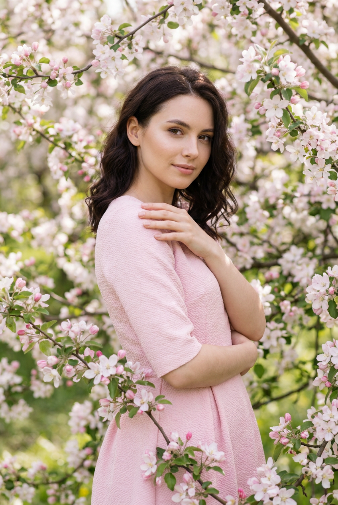
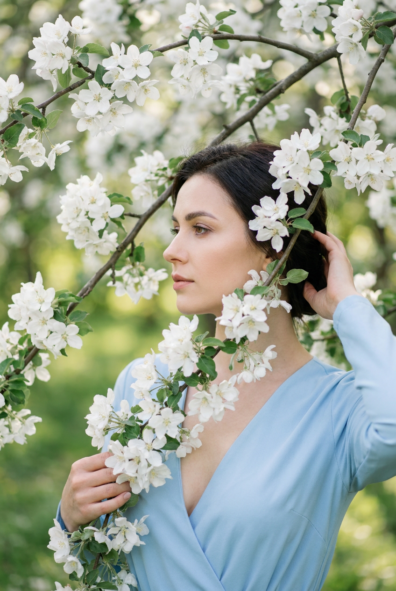
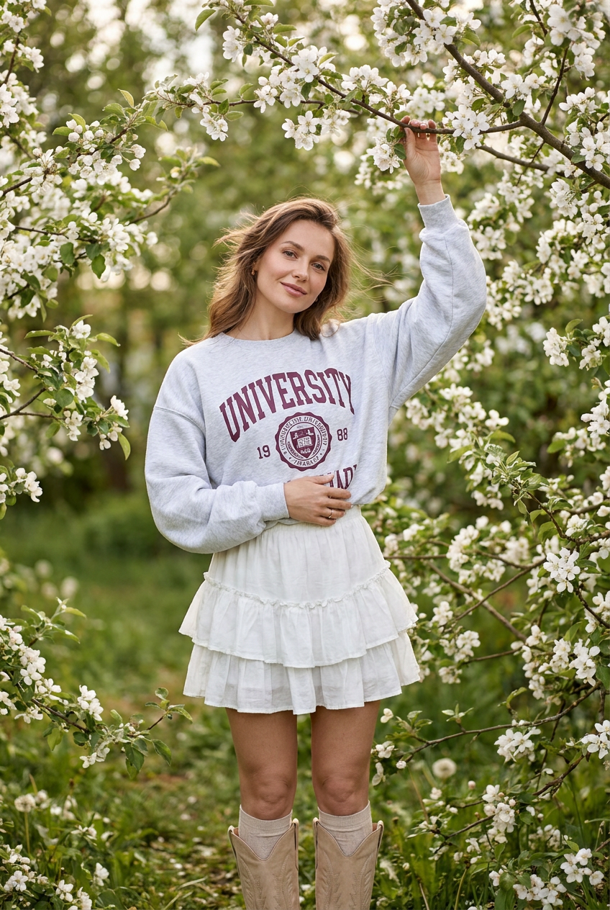
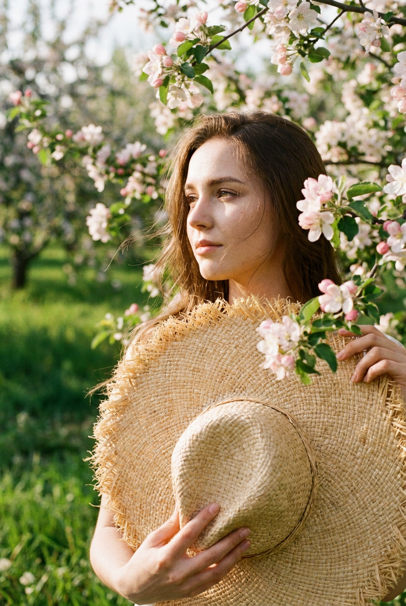
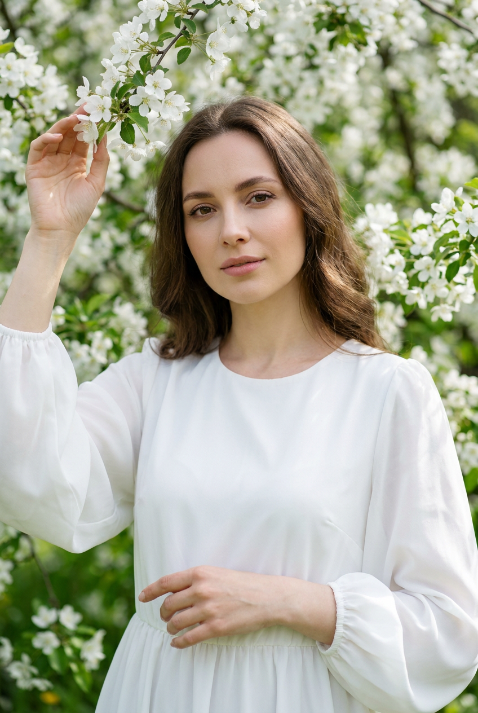
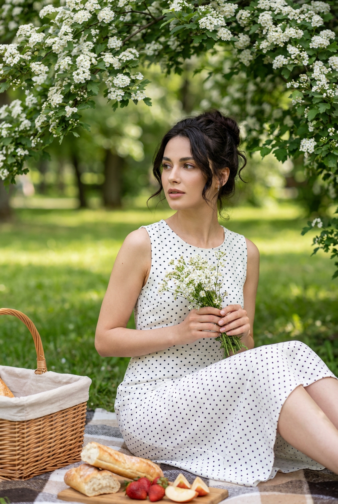
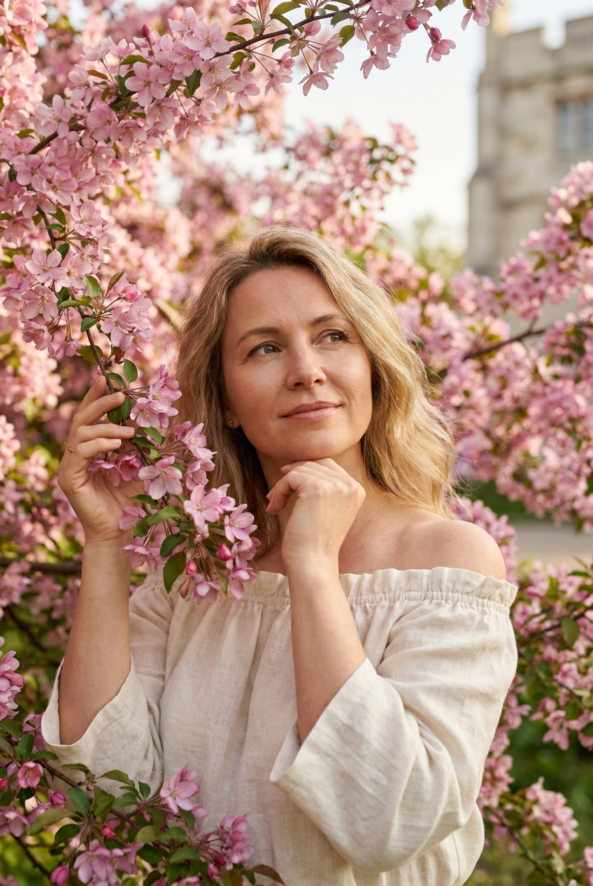
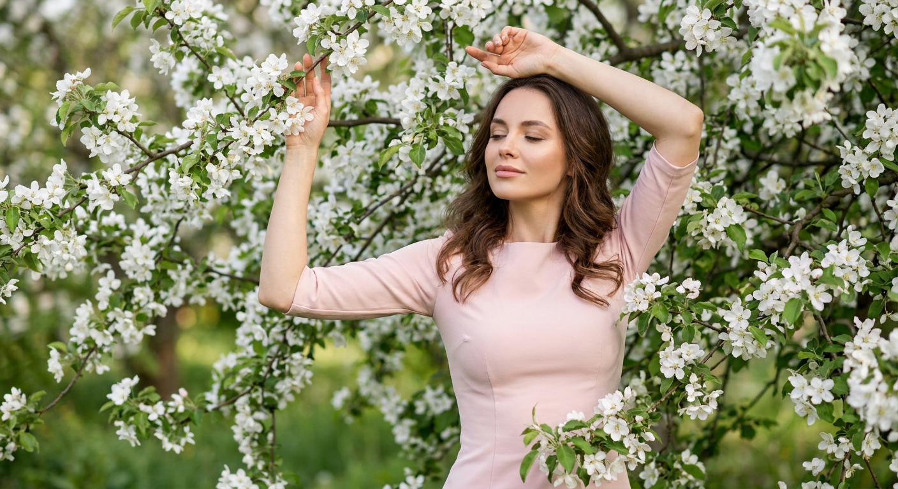
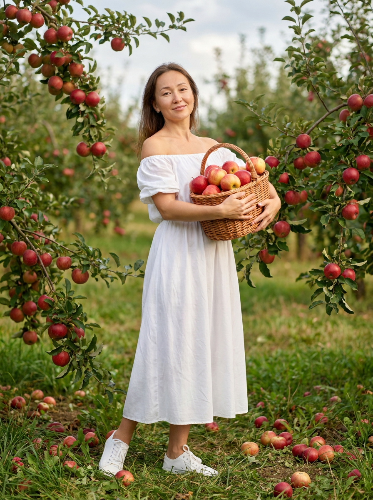
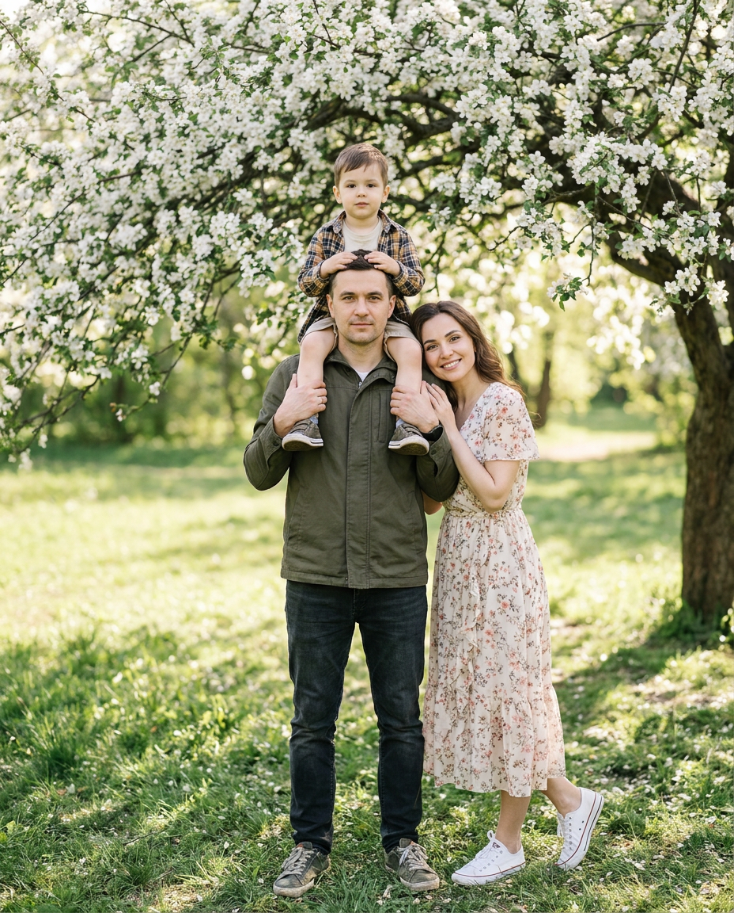

ИИ-фотосессия в яблонях: 10 промптов для нейросети

Весенний кадр среди яблонь легко испортить: цветы превращаются в бесформенное пятно, руки выглядят неестественно, а лицо теряет сходство с референсом. Генерация помогает собрать такую сцену за несколько попыток — с нужным светом, позой, одеждой и настроением.
В подборке — 10 готовых сценариев для ИИ-фотосессии: от крупных портретов и fashion-съёмки до пикника на пледе, корзины с яблоками и семейного кадра под цветущим деревом. Промпты можно использовать как основу и адаптировать под свой референс.
Как сгенерировать такое фото: пошагово
Нужен снимок анфас при ровном свете, лицо в кадре целиком, без тёмных очков и головных уборов. Разрешение от 1000 пикселей по короткой стороне. Чем чётче исходник, тем точнее модель повторит черты.
Выберите сценарий ниже и нажмите «Копировать» — текст уйдёт в буфер целиком, вместе с командой сохранения внешности. Эта команда стоит первой строкой и отвечает за то, чтобы на выходе было ваше лицо, а не случайное.
Кнопка «Сгенерировать» рядом с каждым промптом открывает модель в новой вкладке. Nano Banana Pro работает с референсом лица — в отличие от моделей, которые генерируют портрет с нуля и узнаваемость теряют.
Промпт — в поле ввода, портрет — через загрузку референса. Порядок значения не имеет, но без референса команда сохранения внешности работать не будет: модели нечего сохранять.
Для сторис и ленты берите 9:16, для превью и обложек — 4:3. Первый результат редко идеален: если поза или свет ушли не туда, поправьте соответствующую часть промпта и запустите заново. Обычно хватает двух-трёх итераций.
10 промптов для генерации
1. Нежный spring editorial
Строго сохранить внешность по загруженному референсу: черты лица, пропорции, мимику и текстуру кожи без изменений. Реалистичная fashion-фотография девушки среди густо цветущих яблонь с розовыми и белыми цветами. Настроение нежного spring editorial: мягкий дневной свет, воздушная романтика, объёмные ветви, отдельные лепестки и естественная фактура сада. Вертикальная ориентация, средний план, модель в центре композиции, задний план размытый, но цветущие ветки остаются узнаваемыми и живыми. Девушка стоит под кроной, корпус немного развёрнут к камере. Одна рука легко лежит на противоположном плече, вторая обнимает талию или предплечье. Сохранить естественную анатомию кистей, мягкую пластику позы и реалистичную кожу. Лицо и причёска должны выглядеть натурально, без эффекта пластиковой ретуши. Малая глубина резкости, фокус на глазах, объектив 85 мм, диафрагма f/2, вертикальный кадр 4:5.
2. Профиль среди белых цветов

Строго сохранить внешность по загруженному референсу: черты лица, пропорции, мимику и текстуру кожи без изменений. Фотореалистичный вертикальный кадр с кинематографичным настроением. Женщина показана в профиль, повернувшись влево; лицо находится в левой части изображения, взгляд направлен туда же, выражение спокойное и романтичное. Модель расположена по центру или немного правее. На переднем плане крупные ветви яблони с белыми цветами частично закрывают и обрамляют лицо, одна заметная ветка проходит по диагонали рядом с ним. Соцветия плотно заполняют верх и боковые края, а за ними виден зелёный сад с мягким естественным боке. Одна рука заведена за голову, пальцы аккуратно касаются волос у затылка, вторая держит цветущую ветку перед собой на уровне груди. Руки анатомически правильные. На женщине светло-голубое платье с глубоким V-образным вырезом, мягкой посадкой по фигуре и рукавами как в референсе. Камера на уровне лица, объектив 85 мм, мягкий дневной свет, формат 4:5.
3. Полный рост под яблоней

Создай реалистичную вертикальную fashion-фотографию девушки в тёплом весеннем саду. Она стоит в центре кадра под яблоней, покрытой множеством белых цветов, зелёных листьев и натуральных веток. Композиция в полный рост: вокруг модели густая цветущая крона, но силуэт и одежда хорошо читаются. Одна рука поднята вверх и касается ветки с соцветиями, вторая расслабленно лежит на талии или животе. Корпус слегка повёрнут, поза женственная, пластичная и уверенная, без напряжения в плечах. На лице лёгкая улыбка, взгляд спокойный. Сохранить внешность, причёску, длину, пробор и текстуру волос с референса, не менять индивидуальные черты и оттенок кожи. Тёплый рассеянный свет, естественная глубина резкости, фон сада мягко размыт. Фокус на модели, объектив 50 мм, диафрагма f/2.8, вертикальный формат 4:5, реалистичная текстура ткани и кожи.
4. Соломенный аксессуар в саду

Строго сохранить внешность по загруженному референсу: черты лица, пропорции, мимику и текстуру кожи без изменений. Киношная фотореалистичная фотография молодой девушки в цветущем яблоневом саду. Вертикальный кадр, положение тела в три четверти профиля, взгляд направлен в сторону, выражение лица спокойное и романтичное. Вокруг — бело-розовые цветы на ветках, зелёная трава и другие яблони, размытые естественным боке. Мягкий тёплый дневной свет, тонкие тени, небольшая глубина резкости. В руках девушки объёмный соломенный аксессуар — шляпа или панама с реалистичной фактурой плетения, естественной посадкой и мягкими тенями. Лёгкий ветер чуть шевелит волосы, но без резких выбившихся прядей. Сохранить лицо, возраст, мимику, оттенок кожи и все индивидуальные черты референса; не менять длину, цвет, пробор, укладку и текстуру волос. Натуральная кожа, детализированные глаза, фокус на лице. Камера на уровне глаз, объектив 50 или 85 мм, диафрагма f/2, вертикаль 4:5.
5. Портрет с веткой яблони

Строго сохранить внешность по загруженному референсу: черты лица, пропорции, мимику и текстуру кожи без изменений. Реалистичный вертикальный портрет по грудь: женщина стоит среди плотных ветвей яблони с белыми цветами и зелёными листьями. Позади — сад, превращённый в мягкий зелёный blur с сильным естественным боке. Камера расположена строго на уровне глаз, без нижней перспективы. Лицо в центре кадра, немного повёрнуто вправо, взгляд прямо в объектив, губы слегка сомкнуты. Одна рука поднята к ветке в верхней левой части изображения, пальцы аккуратно касаются или придерживают цветущую ветвь. Вторая рука находится у талии или чуть ниже, пальцы слегка согнуты. Плечи расслаблены. На женщине белое платье с круглым вырезом, объёмными рукавами и гладкой лёгкой тканью без рисунка. Точно сохранить черты лица, типаж, волосы, их цвет, длину, пробор и укладку с исходного фото. Реалистичная кожа, мягкие блики, высокая детализация лица, фокус на глазах, объектив 85 мм, f/2, кадр 4:5.
6. Пикник под цветущим деревом

Строго сохранить внешность по загруженному референсу: черты лица, пропорции, мимику и текстуру кожи без изменений. Реалистичная кинематографичная фотография в вертикальном формате 4:5. Девушка сидит на клетчатом пледе в саду или парке под цветущим яблоневым деревом. В верхней трети и до половины кадра нависают ветки с белыми цветами и зелёными листьями, образуя арку над моделью. На траве вокруг пледа лежат предметы пикника: несколько кусочков хлеба или выпечки, клубника и другие ягоды, нарезанные фрукты, корзинка и светлая ткань. Слева стоит плетёная корзина с ручкой, снаружи видна светлая тканевая вставка. Девушка находится в центре или немного ниже центра, корпус слегка повёрнут влево. Ноги согнуты расслабленно: одна ближе к переднему краю пледа, другая отведена назад. Спина прямая, плечи свободные. Обеими руками она держит небольшой букет белых цветов. Сохранить лицо и волосы с референса без изменений, сделать позу естественной, руки анатомически правильными. Зелёный фон размытый, свет мягкий дневной, объектив 50 мм, f/2.8.
7. В розовой цветущей кроне

Строго сохранить внешность по загруженному референсу: черты лица, пропорции, мимику и текстуру кожи без изменений. Создай максимально реалистичную вертикальную фотографию девушки внутри густой кроны розовой яблони. Цветущие ветви окружают её спереди, сверху и по бокам, формируя плотную романтичную рамку из лепестков, листьев и тонких веток. На переднем плане несколько ветвей размыты, на среднем плане чётко видна девушка, а на заднем остаются мягко размытая архитектура и садовая атмосфера. Кадр должен передавать нежность, тишину и весеннее настроение, с естественным рассеянным светом и живой фактурой цветов. Девушка стоит расслабленно, корпус слегка развёрнут. Одна рука поднята к ветке, вторая мягко согнута возле тела или касается волос; поза женственная, но не постановочная. Сохранить узнаваемое лицо, оттенок кожи, волосы, их длину, цвет, пробор, лёгкую волну и естественную текстуру с референса. Не допускать пластикового лица, лишних пальцев и деформации веток. Фокус на глазах, объектив 85 мм, диафрагма f/2, вертикальный формат 4:5.
8. Тишина в белом цвету

Строго сохранить внешность по загруженному референсу: черты лица, пропорции, мимику и текстуру кожи без изменений. Фотореалистичная fashion-фотография девушки, почти полностью окружённой белыми цветущими ветвями яблони. Густая весенняя крона заполняет всё пространство вокруг модели: объёмные кисти цветов, нежные зелёные листья, натуральная кора и тонкие ветки должны хорошо читаться. Девушка стоит в центре изображения, будто находится внутри дерева. Одна рука поднята и касается цветущих веток, вторая изящно согнута над головой. Корпус слегка развёрнут, поза мягкая, пластичная и женственная. Глаза закрыты или полуприкрыты, выражение умиротворённое, словно модель наслаждается тишиной и свежим воздухом. На ней однотонное платье пастельного оттенка: пудрово-розовое, телесное, персиковое или светло-бежевое; силуэт элегантный, облегающий или слегка струящийся. Сохранить лицо, волосы и индивидуальность референса, не менять пропорции и возраст. Мягкий свет сквозь крону, лёгкое боке, объектив 50 мм, f/2.2, вертикальный кадр 4:5.
9. Корзина красных яблок

Строго сохранить внешность по загруженному референсу: черты лица, пропорции, мимику и текстуру кожи без изменений. Фотореалистичная вертикальная фотография девушки в яблоневом саду среди низких ветвей, усыпанных красными и жёлто-красными яблоками. Она стоит в романтичной, немного игривой позе: корпус слегка развёрнут в сторону, ноги расположены естественно, плечи расслаблены. В руках девушка держит плетёную корзину, наполненную свежими яблоками, и прижимает её к груди или животу. На лице лёгкая улыбка, настроение тёплое, нежное и мечтательное. На ней длинное женственное платье; ткань должна выглядеть реалистично и естественно лежать по фигуре. Сад наполнен зелёными листьями, низкими ветвями и мягким солнечным светом, задний план слегка размыт. Точно сохранить лицо с загруженного референса: форму глаз, бровей, носа, губ, скул, подбородка, овал, тон кожи, возрастные особенности и общее сходство. Не превращать внешность в усреднённое лицо. Реалистичная фактура яблок, корзины и ткани, объектив 50 мм, f/2.8, формат 4:5.
10. Семья под яблоней

Строго сохранить внешность по загруженному референсу: черты лица, пропорции, мимику и текстуру кожи без изменений. Фотореалистичная вертикальная семейная фотография на природе под большим яблоневым деревом, покрытым плотными белыми цветами. Сцена тёплая, домашняя и живая. В центре стоит взрослый мужчина с естественной внешностью, спокойным и уверенным выражением; на его плечах сидит ребёнок и держится руками за голову или плечи отца. Рядом находится женщина, слегка прижавшаяся к мужчине сбоку. Она улыбается в камеру нежно и счастливо, может наклониться к семье или положить руку на плечо мужчины. Все позы должны быть удобными, руки и пальцы — анатомически правильными, без лишних конечностей. Сохранить лица людей по загруженным референсам: индивидуальные черты, пропорции, форму глаз, бровей, носа, губ, скул и подбородка. Не делать взрослых чрезмерно модельными, сохранить естественный возраст и мимику. Белые соцветия образуют мягкую арку над семьёй, фон сада слегка размыт. Тёплый дневной свет, натуральные цвета, объектив 50 мм, f/2.8, вертикальный кадр 4:5.
Что важно учесть в этом стиле
У яблоневого сада есть риск превратиться в цветной шум. Поэтому в промпте нужно разделять планы: размытые ветви на переднем, модель на среднем, сад или архитектура на заднем. Для портрета достаточно 50–85 мм и диафрагмы f/2–f/2.8, а для полного роста лучше указать 35–50 мм и оставить фон чуть более читаемым.
Если используется референс человека, отдельно описывайте лицо и волосы: не только сходство, но и длину, пробор, текстуру, укладку. Для сложных поз полезно задать положение каждой руки и направление взгляда. Это снижает количество странных кистей и случайных жестов.
Идеи для вариаций
- Замените белые цветы на нежно-розовые и добавьте лепестки, летящие в воздухе.
- Перенесите съёмку на золотой час: низкое солнце даст тёплые контровые блики в волосах.
- Добавьте винтажное платье, кружевной воротник или лёгкий кардиган.
- Сделайте серию из трёх планов: портрет по грудь, средний план и полный рост.
- Для более живого кадра добавьте книгу, садовые ножницы, ленту в волосах или плетёную сумку.
- Попробуйте чёрно-белую версию с сохранением деталей цветов и фактуры кожи.
Как собрать свой промпт
Сначала определите формат и масштаб: крупный портрет, кадр по пояс или полный рост. Затем опишите локацию, цвет яблонь, время суток и расположение ветвей. После этого добавьте позу, одежду, эмоцию и направление взгляда. В конце укажите свет, глубину резкости, объектив, диафрагму и соотношение сторон 4:5 или 9:16.
Один промпт лучше посвятить одному сценарию. Не смешивайте пикник, семейную сцену и fashion-позу в одном запросе. Для устойчивого результата сделайте 4–8 генераций, выберите лучший вариант и отдельно исправьте руки, лицо или фон. Если нейросеть поддерживает маскирование, редактируйте проблемную область, а не перегенерируйте весь кадр.
Ошибки, из-за которых кадр не получается
- Слишком много объектов. Когда в запросе одновременно есть яблоки, корзина, плед, букет и несколько ветвей, модель теряет главный объект. Уберите второстепенные детали.
- Не задан план съёмки. Без слов «по грудь», «средний план» или «полный рост» композиция может случайно обрезать руки и ноги.
- Общие указания для позы. Фраза «женственная поза» слабее точного описания положения рук, корпуса и взгляда.
- Перегруженная ретушь. Слова вроде «идеальная кожа» часто превращают лицо в пластиковую маску. Лучше просить естественную текстуру и мягкие тени.
- Несовместимый объектив. Широкий угол в крупном портрете растягивает лицо и ближайшие ветки. Для портрета используйте 50–85 мм.
- Игнорирование анатомии. Для сложных жестов отдельно укажите число рук, контакт пальцев с веткой и естественное положение локтей.
Частые вопросы
Как сделать такое ИИ-фото бесплатно?
Можно попробовать Kandinsky и Шедеврум: они подходят для генерации сцен по тексту, но точное сохранение лица по референсу может быть ограничено, а сложные руки и позы иногда требуют нескольких попыток. В Krea AI и Arena.ai удобнее тестировать разные модели и работать с изображением-основой, однако бесплатный доступ может иметь лимиты, очередь или ограничения на число генераций. Для узнаваемого лица загружайте качественный портрет анфас и проверяйте правила выбранного сервиса.
Как сохранить сходство с референсом?
Используйте чёткое фото без сильных фильтров, очков и перекрывающих лицо волос. В промпте отдельно зафиксируйте форму лица, возраст, тон кожи, причёску и пробор, а при наличии настроек увеличьте вес референса. Не меняйте одновременно лицо, ракурс и выражение — при резком отличии сцены сходство обычно снижается.
Как убрать лишние пальцы и странные ветки?
Опишите положение каждой руки простыми фразами: одна касается ветки, вторая лежит на талии. Добавьте запрет на лишние пальцы, деформированные кисти, слияние рук с цветами и неестественные суставы. Если сервис поддерживает negative prompt или локальное редактирование, примените его к рукам и переднему плану.
Какой формат выбрать для фотосессии в яблонях?
Для публикации в ленте подойдёт вертикаль 4:5: в кадре помещаются лицо, плечи и часть кроны. Для сторис и обложек используйте 9:16, но заранее попросите оставить свободное место сверху или снизу под текст. Портрет лучше генерировать с объективом 85 мм, а полный рост — с 35–50 мм и более умеренным размытием фона.